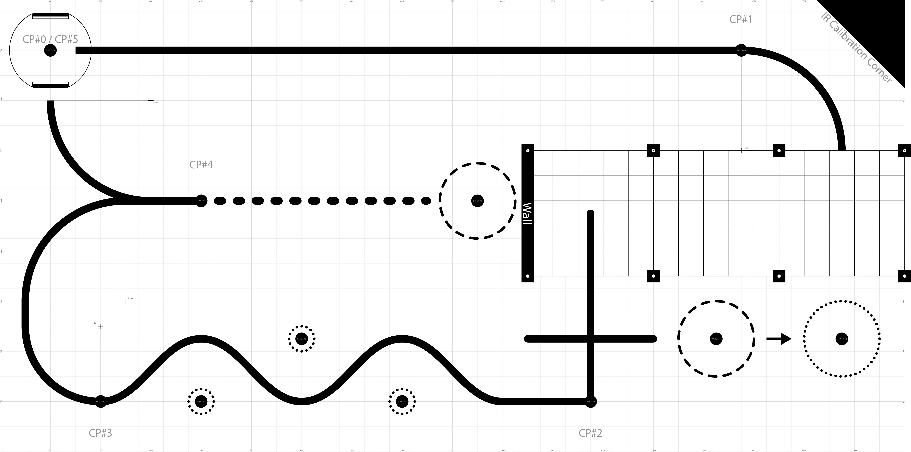

ME 405 Term Project
Project Overview
This project and the documentation on this website were created by Cal Poly students in ME 405 as their final deliverable for the term project. Students were tasked with programming a Pololu Romi robot to complete a printed course/track autonomously. The track has 5 checkpoints that the robot is required to reach and optional bonus challenges. Student groups implemented strategies of their choice to program their robot to reach each checkpoint.
Robot Overview
The robots in this course use the Romi kit from Pololu and several other Pololu accessories. The microcontroller is an STM32 Nucleo-L476RG board configured to run micropython.
Course Description
The course is defined by black marks printed on white grid paper. For most of the course, a thick line defines a path between checkpoints. Infrared sensors can be used to detect the line, enabling the robot to navigate the couse via line following. Curves in the lines require fast feedback and tightly tuned control. The section of the course with no line is referred to as the “parking garage.” In this section the robot must use an alternative means of navigation to maneuver under an aluminum structure. At the end of the parking garage is a wall. The robot must successfully correct its motion after hitting and/or detecting the wall. To complete the bounus challenges, the robot must move plastic cups into/out of the dashed circles on the course.
{kind=link}

Game track
Robot Design and Repository
Use the navigation sidebar to learn more about the design of our team’s robot (affectionately called BB, or Bumble Bee) and its performance on the course!
The GitHub repsoitory with all project files can be found here.